Эмоциональное состояние агента
Как дать AI-персонажу характер, восприимчивость и эмоциональную память — вместо реакции только на последнюю реплику.
Понимание
Эмоциональное состояние — это история реакции
Обычный анализ называет эмоцию отдельной реплики. Агенту нужно больше: различать звучание и смысл, учитывать характер, сохранять последствия событий и формировать собственную эмоциональную траекторию.
1. Почему одной эмоциональной метки недостаточно
Сервис анализа разговора может сообщить, что в нём присутствовали тревога или агрессия. Но итоговая метка не показывает, когда реакция возникла, как усиливалась и исчезла ли после изменения ситуации. Для живого агента эмоция должна быть не только результатом анализа, но и частью продолжающегося внутреннего процесса.
Что выражено в этом фрагменте?
Сообщение, предложение или звонок получает одну или несколько эмоциональных меток.
Что происходит с персонажем?
Каждое событие изменяет уже существующее состояние, а результат влияет на следующие реакции.
2. Акустический признак, прото-эмоция и эмоция — разные уровни
Прото-эмоция — это распознаваемая в звуке низкоуровневая форма реакции, которая не соответствует одной смысловой эмоции и может участвовать в формировании множества эмоций верхнего уровня.
| Уровень | Что он описывает | Пример |
|---|---|---|
| Акустический признак | Наблюдаемое свойство звука | Громкость, скорость, изменение тона |
| Прото-эмоция | Базовую форму и интенсивность реакции | Возбуждение, напряжение, резкость, спокойствие |
| Эмоция верхнего уровня | Смысловую интерпретацию происходящего | Страх, гнев, радость, разочарование |
| Состояние агента | Собственную реакцию персонажа с учётом характера и памяти | Устойчивое раздражение, растущая тревога, восстановление |
Смешение этих уровней приводит к главной ошибке обычного аудиоанализа: акустическому паттерну приписывается готовое название смысловой эмоции.
3. По одному звуку нельзя уверенно определить смысловую эмоцию
Аудио может показать, что голос стал громче, быстрее, выше, резче или напряжённее. Но эти признаки не сообщают, к чему относится реакция. Один и тот же паттерн возбуждения встречается при угрозе, радостной новости, споре, спортивном азарте или попытке срочно привлечь внимание.
Поэтому выход акустического анализа не является диагнозом «это страх» или «это гнев». Он описывает только прото-эмоциональную основу, на которой могут строиться разные смысловые эмоции.
4. Прото-эмоции и эмоции связаны отношением «многие ко многим»
Одна прото-эмоция может поддерживать несколько эмоций верхнего уровня. И наоборот, одна эмоция складывается из нескольких базовых проявлений и смыслового контекста.
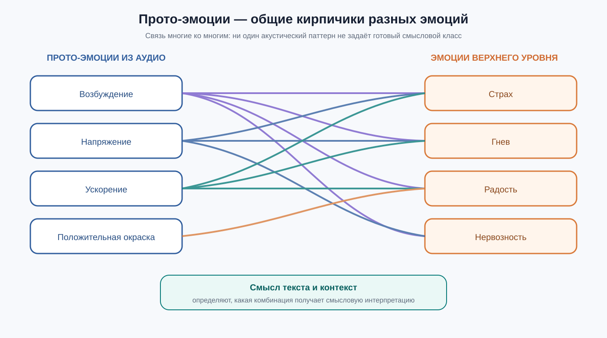
Как читать: возбуждение может участвовать в страхе, гневе и радости; страх, в свою очередь, может сочетать возбуждение, напряжение и ускорение. Ни одна стрелка сама по себе не является окончательной классификацией.
Возбуждение, напряжение и скорость создают набор возможных эмоциональных интерпретаций.
Смысл ситуации определяет, какие из этих базовых признаков относятся к страху, радости, гневу или другой эмоции.
5. Текст определяет смысл, аудио меняет распределение
Смысл слов задаёт пространство возможных эмоций верхнего уровня. Звук добавляет информацию, которой нет в тексте: фактическую силу, напряжение и форму реакции. Поэтому акустика не просто делает одну заранее выбранную эмоцию «сильнее». Она может изменить соотношение между несколькими смысловыми эмоциями.
Фраза «Он уже рядом, нам нужно уходить», произнесённая быстро и напряжённо, получает поддержку в сторону страха и тревоги. Фраза «Я так рад, что ты приехал!», произнесённая с похожим возбуждением, получает другую интерпретацию, потому что смысл указывает на радость.
6. Четыре режима дают четыре разных результата
| Какие данные используются | Что можно получить | Чего не хватает |
|---|---|---|
| Только текст | Смысл и распределение возможных эмоций | Живая интенсивность и акустическая форма реакции |
| Только аудио | Прото-эмоции и силу реакции | Нельзя уверенно определить смысловую эмоцию |
| Текст и аудио | Смысловое распределение, уточнённое прото-эмоциями | Это ещё состояние собеседника, а не агента |
| Плюс характер и память | Собственное текущее состояние конкретного агента | Получена полная внутренняя модель для следующего шага |
7. Эмоция собеседника не равна состоянию агента
Если собеседник раздражён, агент не обязан автоматически становиться раздражённым. Внешний сигнал проходит через восприимчивость, характер и уже накопленное состояние персонажа.
Замечает напряжение, но почти сохраняет равновесие и быстро восстанавливается.
Сильнее отклоняется от обычного состояния и ярче реагирует на текущий сигнал.
Может преобразовать агрессию собеседника в страх и долго сохранять настороженность.
Модель не зеркалирует входную эмоцию, а преобразует воспринятую ситуацию в собственную реакцию конкретного персонажа.
8. Состояние продолжается между репликами
После конфликта напряжение не исчезает вместе с последним словом. Следующая спокойная реплика может ослабить его, но не обязана мгновенно обнулить. Поддержка, извинение или новая угроза воздействуют не на пустое место, а на состояние, сформированное предыдущими событиями.
9. Характер задаёт естественный диапазон
Характер — не текущая эмоция и не набор жёстких правил. Это долговременная предрасположенность: какие состояния персонажу естественны, насколько легко он отклоняется от них и как быстро возвращается к обычному фону.
Структура характера и хранение его эмоциональных весов подробнее раскрыты в статье «Коммуникационные стили в агентских системах». Здесь характер используется как устойчивая основа эмоциональной реакции.
10. Одно событие — разные траектории
Представим резкое обвинение, затем спокойное продолжение и извинение. Спокойный персонаж отклонится слабо и быстро восстановится. Импульсивный переживёт сильный, но короткий всплеск. Тревожный дольше сохранит напряжение даже после завершения конфликта.
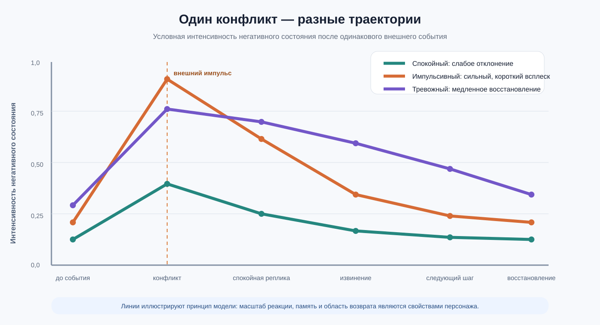
Сила реакции, её форма и скорость восстановления зависят не только от события, но и от свойств персонажа.
11. Что меняется по сравнению с обычным анализом
| Обычный анализ эмоций | Рекуррентное состояние агента |
|---|---|
| Присваивает метку сообщению или звонку | Отслеживает непрерывную историю изменений |
| Связывает акустический паттерн с готовым классом | Рассматривает звук как прото-эмоциональную основу |
| Результат часто появляется после разговора | Состояние обновляется во время взаимодействия |
| Одинаковый сигнал трактуется одинаково | Реакция зависит от характера и прошлого состояния |
| Результат служит отчётом | Результат влияет на следующие реакции агента |
12. Что представляет собой модель в целом
Эмоциональное состояние агента — это скрытая внутренняя история. Аудио даёт базовые признаки реакции, текст определяет смысл, характер задаёт индивидуальную предрасположенность, а память связывает события во времени.
Какие продуктовые возможности дают непрерывность состояния, разные характеры и эмоциональная память.
Как представить прото-эмоции и состояние, объединить источники, обновлять вектор во времени и контролировать устойчивость.
Бизнес
Что получает продукт
Не декоративную метку «агент грустит», а управляемую траекторию: система видит развитие реакции, персонаж помнит последствия, а следующая стратегия учитывает текущее состояние.
1. От отчёта об эмоциях — к управлению взаимодействием
Обычная аналитика чаще отвечает после завершения разговора: сколько в нём было негатива, тревоги или удовлетворения. Рекуррентное состояние работает во время взаимодействия. Оно показывает направление изменений: напряжение растёт, сохраняется или действительно снижается после действия системы.
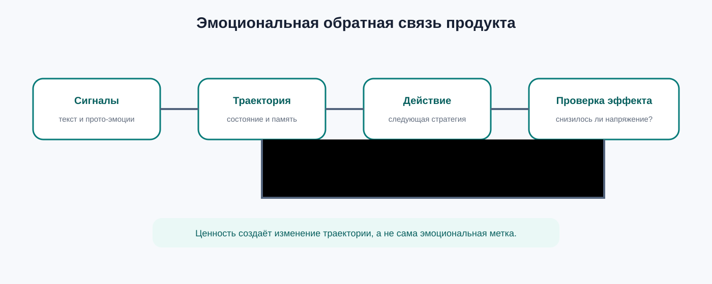
Ценность создаёт не сама эмоциональная метка, а возможность выбрать действие и проверить, изменило ли оно траекторию.
| Обычная аналитика | Рекуррентное состояние | Продуктовый эффект |
|---|---|---|
| Каждый фрагмент оценивается отдельно | Новая оценка продолжает предыдущую траекторию | Персонаж выглядит последовательным |
| Результат — отчёт после события | Результат доступен во время взаимодействия | Можно менять стратегию до завершения диалога |
| Одинаковый сигнал даёт одинаковую реакцию | Характер меняет восприимчивость и восстановление | Появляются действительно разные роли |
2. Use case 1. Поддержка и колл-центр
Задача. Определить не просто «негативный звонок», а момент возникновения тревоги, её накопление и реальное восстановление клиента.
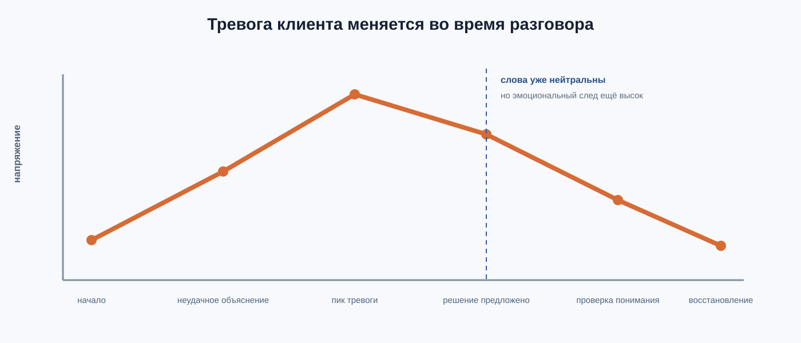
После предложенного решения слова могут стать нейтральными раньше, чем исчезнут прото-эмоциональные признаки напряжения.
| Этап | Что видит система | Продуктовое действие |
|---|---|---|
| Клиент описывает проблему | Текст задаёт причину, голос показывает исходное напряжение | Зафиксировать начальную точку траектории |
| Несколько неудачных объяснений | Тревога и раздражение накапливаются | Сменить сценарий, темп или подключить оператора |
| Решение предложено | Слова нейтральны, но акустический след сохраняется | Не завершать обращение преждевременно |
| Клиент понял решение | Напряжение устойчиво снижается | Зафиксировать фактическую деэскалацию |
Метрики: время до деэскалации, максимальный уровень напряжения, остаточное состояние при завершении, доля эскалаций человеку и доля повторных обращений.
3. Use case 2. Обучающий агент
Задача. Различать случайную ошибку и накопившуюся фрустрацию. Реакция на последнюю реплику не показывает, что ученик несколько шагов подряд теряет уверенность.
Небольшое напряжение не требует немедленного упрощения.
Отрицательный след накапливается; растёт риск отказа от задания.
Система проверяет, уменьшила ли помощь напряжение.
После успешного решения положительное состояние также не должно исчезать мгновенно: тьютор может закрепить успех и только затем повысить сложность.
Продуктовый эффект: адаптация к траектории ученика вместо механической реакции на один ответ. Метрики: восстановление после ошибки, число шагов до отказа, эффект подсказки и удержание в задании.
4. Use case 3. Игровой NPC
Задача. Сделать последствия угроз, помощи и примирения частью сцены. Без состояния NPC после каждого события фактически начинает отношения заново.
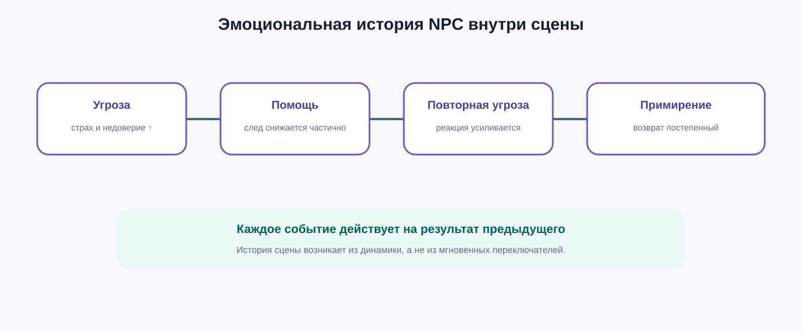
Помощь после угрозы снижает негативное состояние, но не обязана мгновенно восстанавливать доверие.
| Событие | Изменение состояния | Наблюдаемое поведение |
|---|---|---|
| Игрок угрожает | Растут страх, раздражение или настороженность | NPC увеличивает дистанцию и меньше доверяет |
| Игрок помогает | Негативный след уменьшается постепенно | Появляется осторожное сотрудничество |
| Угроза повторяется | Новый сигнал действует на сохранённое состояние | Реакция сильнее или восстановление медленнее |
| Происходит примирение | Состояние возвращается к характерному фону | Отношение меняется убедительно, а не переключателем |
Продуктовый эффект: один набор событий создаёт разные траектории у стоика, тревожного и вспыльчивого NPC без ручного написания каждой комбинации.
5. Use case 4. Companion и виртуальный помощник
Задача. Сохранить ощущение продолжающегося собеседника, но не смешивать текущее настроение с долговременным отношением.
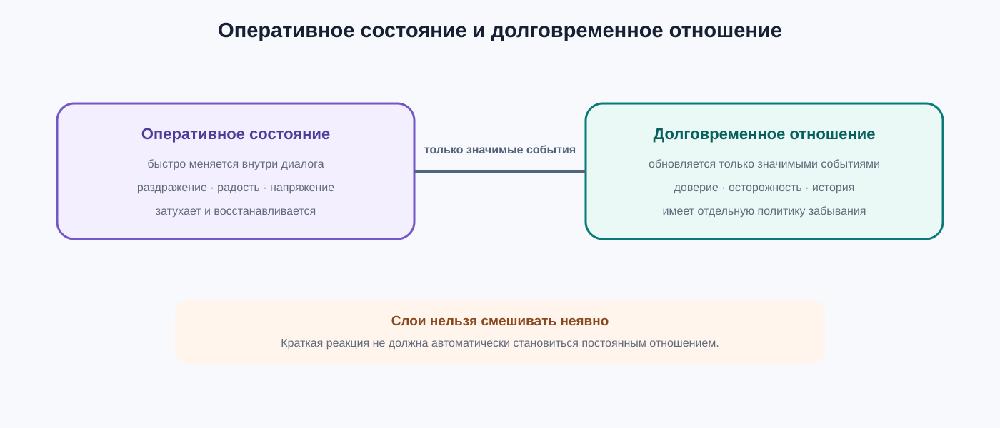
Оперативное состояние меняется в диалоге; значимые события могут отдельно обновлять долговременное отношение.
След последних реплик: напряжение, радость, раздражение, восстановление. Оно быстро изменяется и постепенно затухает.
Доверие и значимые события между встречами. Это отдельный слой с собственной политикой записи и забывания.
Продуктовый эффект: персонаж сохраняет настроение внутри разговора и узнаваемое отношение между разговорами, не перенося случайную краткую реакцию навсегда.
6. Use case 5. Тренажёр переговоров
Задача. Проверять одну стратегию на разных типах собеседников, а не проходить единственный заранее написанный сценарий.
| Профиль | Динамика после давления | Какой навык проверяется |
|---|---|---|
| Стоик | Слабо отклоняется и сохраняет позицию | Аргументация без опоры на эмоциональное давление |
| Импульсивный | Быстро вспыхивает, но способен быстро восстановиться | Деэскалация непосредственно в момент пика |
| Тревожный | Долго сохраняет ожидание угрозы | Последовательное восстановление безопасности и доверия |
Одинаковая реплика обучаемого запускает разные траектории, но профили остаются воспроизводимыми. Это позволяет сравнивать стратегии, а не случайные сценарные ветки.
Метрики: достигнутый пик, время восстановления, количество повторных эскалаций и устойчивость результатов при повторном прохождении.
7. Use case 6. Социальный робот и мультимодальный интерфейс
Задача. Реагировать на расхождение между словами и звучанием. Нейтральная фраза может сопровождаться сильным возбуждением, но акустический паттерн сам по себе не раскрывает его смысл.
Определяет смысловую область: просьба, угроза, радостная новость или сообщение о проблеме.
Добавляют интенсивность, напряжение и форму живой реакции.
Связывает оба сигнала с характером и историей самого робота.
Продуктовый эффект: робот не игнорирует звучание и одновременно не выдаёт прото-эмоциональный паттерн за достоверно определённую эмоцию человека.
8. Как настраивать продукт
| Уровень | Что настраивается | Пример решения |
|---|---|---|
| Роль | Характер и естественный эмоциональный фон | Спокойный помощник или тревожный NPC |
| Динамика | Восприимчивость, память, вариативность и восстановление | Долго помнить страх, но быстро терять раздражение |
| Сценарий | Допустимые реакции и правила эскалации | Поддержка распознаёт агрессию, но не перенимает её |
| Эксплуатация | Границы состояния, время жизни и изоляция диалогов | Новый клиент не наследует состояние предыдущего |
9. Что измерять в продукте
| Метрика | Проверяемый вопрос | Где особенно важна |
|---|---|---|
| Непрерывность | Сохраняются ли последствия между шагами? | NPC, companion |
| Время восстановления | Как быстро состояние возвращается к фону? | Поддержка, переговоры |
| Деэскалация | Снизилось ли отрицательное состояние после действия? | Колл-центр, обучение |
| Различимость персонажей | Дают ли профили разные траектории на одном сценарии? | Игры, тренажёры |
| Управляемость | Предсказуемо ли меняется динамика при настройке? | Все сценарии |
| Изоляция и границы | Нет ли переноса между пользователями и неконтролируемого накопления? | Все продукты |
10. Три уровня внедрения
Аналитика траектории
Состояние рассчитывается для наблюдения и метрик, но пока не меняет поведение.
Адаптация диалога
Состояние выбирает следующую стратегию в заранее заданных безопасных границах.
Персонаж и память
Характер, оперативное состояние и отдельная долговременная память формируют устойчивую роль.
Инженерия
От входных сигналов к сохраняемому состоянию
Инженерная задача состоит не в выборе одной метки эмоции, а в согласованном обновлении N-мерного состояния. Семантический слой сначала формирует промежуточную реакцию, затем акустический сигнал и характер преобразуют её в итоговый вектор.
1. Пространство состояния и именованные сущности
Все компоненты системы используют единый упорядоченный набор эмоций EMOTION_SPACE. Для каждой эмоции хранится отдельная интенсивность, поэтому состояние является полным многомерным вектором:
current_state ∈ ℝ|EMOTION_SPACE|Количество эмоций выбирается при проектировании системы. Важно не конкретное число, а единая семантика координат: одна и та же позиция во всех входных и внутренних векторах должна обозначать одну и ту же эмоцию.
| Имя | Определение |
|---|---|
EMOTION_SPACE | Единый набор эмоциональных координат модели. |
text_emotions | Эмоциональный вектор, распознанный в тексте собеседника. |
PROTO_EMOTION_SPACE | Ограниченный набор низкоуровневых акустических паттернов: например, возбуждение, напряжение, базовая положительная или отрицательная окраска, удивление. |
proto_emotions | Результат акустического анализатора в пространстве прото-эмоций. Это ещё не классификация эмоций верхнего уровня. |
proto_to_emotion_weights | Таблица многозначного соответствия: насколько каждая прото-эмоция поддерживает каждую координату EMOTION_SPACE. |
audio_emotions | Подготовленный акустический вклад после распределения proto_emotions по общему пространству эмоций. Это не сырой выход аудиоклассификатора. |
response_emotions | Эмоциональный смысл уже сформированного ответа агента. |
character_baseline | Базовый профиль эмоциональных склонностей персонажа. |
previous_state | Итоговое эмоциональное состояние предыдущего шага. |
semantic_state | Промежуточное состояние после семантического слоя. |
current_state | Итоговое состояние текущего шага. |
Контракт акустического канала: от прото-эмоций к эмоциям верхнего уровня
Акустический анализатор не должен притворяться классификатором всего EMOTION_SPACE. Без смыслового контекста звук обычно позволяет надёжнее оценить ограниченный набор базовых паттернов реакции, чем различить все эмоции верхнего уровня. Если инженер слышит речь на незнакомом языке, он может заметить напряжение, возбуждение, резкость или спокойствие, но не всегда понимает: собеседники ссорятся, радуются или энергично обсуждают новости.
proto_emotions описывает то, что обнаружено непосредственно в звуке. text_emotions описывает смысловые классы. audio_emotions — это уже проекция прото-эмоций в координаты, совместимые с EMOTION_SPACE.Одна прото-эмоция может поддерживать несколько классов верхнего уровня, а один класс может получать вклад от нескольких прото-эмоций. Поэтому между пространствами требуется отображение «многие ко многим», а не выбор одной окончательной метки.
audio_emotions[emotion] = сумма по всем proto (proto_emotions[proto] × proto_to_emotion_weights[proto, emotion])Формула вычисляется для каждой координаты emotion из EMOTION_SPACE. В простейшей реализации таблица соответствий может быть фиксированной: один распознанный паттерн копируется или распределяется между несколькими эмоциями. Более развитый вариант использует обученную матрицу, калиброванную на совместных данных «аудио + текст».
| Прото-эмоциональный признак | Какие классы он может поддерживать | Почему смысл обязателен |
|---|---|---|
| Высокое возбуждение или ускорение | Страх, гнев, радость, волнение, нервозность | Одинаковая активация возникает и при угрозе, и при радостной новости. |
| Отрицательная базовая окраска | Грусть, разочарование, горе, забота | По звуку трудно определить объект и причину переживания. |
| Положительная базовая окраска | Радость, одобрение, восхищение, оптимизм | Смысл различает эмоциональные классы с похожей акустической основой. |
| Резкое изменение или удивление | Удивление, любопытство, испуг | Контекст определяет, является событие угрозой или новой информацией. |
Минимальный пример проекции
Пусть акустический анализатор обнаружил сильное возбуждение. Само по себе оно не выбирает между страхом, гневом и радостью. Таблица отображения создаёт акустические вклады сразу в несколько координат:
| Источник | joy | anger | fear |
|---|---|---|---|
proto_emotions: возбуждение | 0,80 | ||
| Вес отображения возбуждения | 0,50 | 0,70 | 0,90 |
audio_emotions | 0,40 | 0,56 | 0,72 |
Этот вектор ещё не является окончательным выводом «человек испытывает страх». Он показывает, какие смысловые эмоции совместимы с обнаруженной акустической основой и насколько сильно аудио может поддержать каждую из них. Семантический слой и текущее состояние агента разрешают неоднозначность на следующих этапах расчёта.
Фиксированная и контекстная проекция
В базовой модели proto_to_emotion_weights фиксирована, а смысл влияет позже через semantic_state. Изменение весов проекции самим текстом — отдельное контекстное расширение, которое требует обучения и проверки.
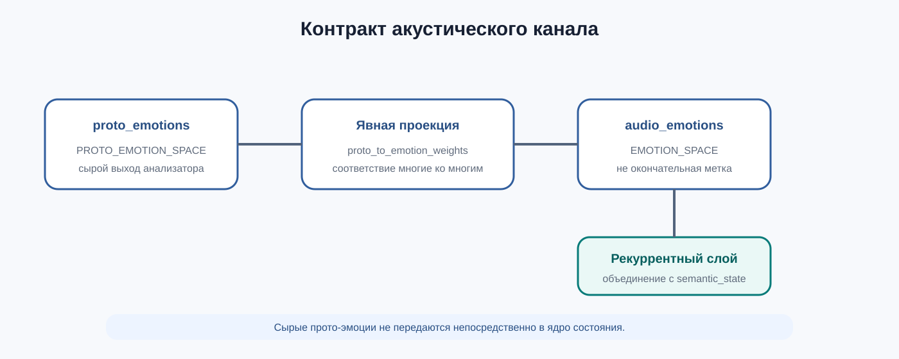
Рекуррентное ядро получает только audio_emotions, явно приведённый к EMOTION_SPACE.
audio_emotions как окончательную эмоцию собеседника. Этот вектор предназначен для модуляции итогового состояния совместно со смыслом, характером и памятью.character_baseline используется только как готовый входной вектор модели состояния.Диапазон и смысл координат
Рекомендуемый контракт входов — независимые активации в диапазоне от 0 до 1:
vectori ≤ 1Сумма координат не обязана равняться единице: радость, тревога и раздражение могут быть активны одновременно. Все анализаторы должны быть откалиброваны в сопоставимом масштабе; иначе одинаковое число в разных каналах будет означать разную интенсивность.
Операции над векторами
| Запись | Смысл |
|---|---|
scalar × vector | Каждая координата вектора умножается на одно число. |
vector₁ ⊙ vector₂ | Покоординатное умножение двух векторов одинаковой размерности. |
vector₁ + vector₂ | Покоординатное сложение. Скалярное произведение в модели не используется. |
Что означает шаг t
Индекс t обозначает событие обновления состояния. Это может быть завершённый обмен «сообщение собеседника → ответ агента», отдельное предложение, событие среды или фиксированный временной интервал. Выбранная гранулярность должна быть единой для расчёта, хранения и тестирования.
2. Базовая операция смешения
Для каждой эмоции i сначала независимо выбирается случайный множитель:
random_factori ∼ U(1 − variability_range, 1 + variability_range)Затем значение этой эмоциональной координаты вычисляется как взвешенная сумма трёх источников:
emotion_valuei = layer_gain × [external_weight × external_emotionsi + random_factori × modulated_emotionsi + previous_weight × previous_emotionsi]random_factor создаётся отдельно для каждой эмоции. Поэтому вариативность слегка меняет форму всего профиля, а не умножает весь вектор на одно случайное число.
| Параметр | Инженерный смысл |
|---|---|
external_weight | Восприимчивость слоя к внешнему сигналу: смыслу слов или акустике. |
variability_range | Допустимый диапазон случайного отклонения второго входа слоя. |
previous_weight | Сила переноса предыдущего состояния в текущий расчёт. |
layer_gain | Общий масштаб результата слоя; также влияет на рекуррентную динамику. |
3. Два последовательных слоя
Слой 1: семантическая динамика
semantic_statet = semantic_gain × [text_weight × text_emotionst + response_random_factort ⊙ response_emotionst + previous_state_weight × previous_statet−1]Он объединяет эмоциональный смысл реплики собеседника, эмоциональный смысл собственного ответа и предыдущее состояние.
Слой 2: акустика и характер
current_statet = state_gain × [audio_weight × audio_emotionst + character_random_factort ⊙ character_baseline + semantic_state_weight × semantic_statet]Второй слой добавляет подготовленный акустический вклад audio_emotions, базовый профиль персонажа и определяет, насколько сильно семантическое состояние сохраняется в результате. Сырые proto_emotions в эту формулу не передаются: сначала они проецируются в EMOTION_SPACE.
| Параметр слоя | Что регулирует |
|---|---|
text_weight | Влияние эмоционального содержания текста собеседника. |
response_variability_range | Диапазон случайного изменения вклада response_emotions. |
previous_state_weight | Перенос эмоциональной памяти в семантический слой. |
semantic_gain | Общий масштаб результата семантического слоя. |
audio_weight | Влияние эмоциональных признаков акустического сигнала. |
character_variability_range | Диапазон случайного изменения проявления характера. |
semantic_state_weight | Перенос результата семантического слоя в итоговое состояние. |
state_gain | Общий масштаб итогового слоя. |
response_random_factort,i ∼ U(1 − response_variability_range, 1 + response_variability_range)character_random_factort,i ∼ U(1 − character_variability_range, 1 + character_variability_range)Новый множитель генерируется на каждом шаге t, для каждой эмоции i и отдельно для каждого слоя. По умолчанию выборки независимы; коррелированная случайность является отдельным расширением модели.
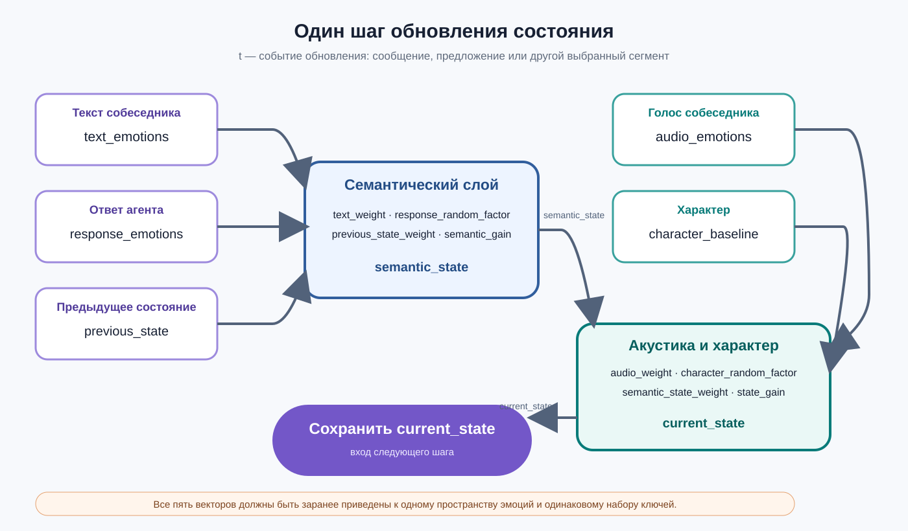
Как читать: три левых входа формируют semantic_state. Затем semantic_state, акустический сигнал и характер формируют current_state, которое сохраняется для следующего события.
4. Сквозной числовой пример
Рассмотрим один шаг для пространства из трёх эмоций:
EMOTION_SPACE = [joy, anger, fear]| Вектор | joy | anger | fear |
|---|---|---|---|
text_emotions | 0,10 | 0,80 | 0,20 |
response_emotions | 0,20 | 0,40 | 0,10 |
previous_state | 0,40 | 0,30 | 0,20 |
audio_emotions | 0,05 | 0,90 | 0,30 |
character_baseline | 0,50 | 0,15 | 0,35 |
Первый слой
Зададим text_weight = 0,5, previous_state_weight = 0,6, semantic_gain = 0,8. Чтобы пример можно было повторить вручную, зафиксируем выпавшие множители:
response_random_factor = [1,05; 0,95; 1,00]semantic_statejoy = 0,8 × (0,5 × 0,10 + 1,05 × 0,20 + 0,6 × 0,40) = 0,400semantic_stateanger = 0,8 × (0,5 × 0,80 + 0,95 × 0,40 + 0,6 × 0,30) = 0,768semantic_statefear = 0,8 × (0,5 × 0,20 + 1,00 × 0,10 + 0,6 × 0,20) = 0,256semantic_state = [0,400; 0,768; 0,256]Второй слой
Зададим audio_weight = 0,4, semantic_state_weight = 0,7, state_gain = 0,9 и зафиксируем:
character_random_factor = [1,00; 1,10; 0,90]current_statejoy = 0,9 × (0,4 × 0,05 + 1,00 × 0,50 + 0,7 × 0,400) = 0,720current_stateanger = 0,9 × (0,4 × 0,90 + 1,10 × 0,15 + 0,7 × 0,768) = 0,956current_statefear = 0,9 × (0,4 × 0,30 + 0,90 × 0,35 + 0,7 × 0,256) = 0,553current_state = [0,720; 0,956; 0,553]5. Вклад каждого источника
После раскрытия двух слоёв итог читается как сумма пяти понятных компонентов:
current_statet = audio_contributiont + character_contributiont + text_contributiont + response_contributiont + memory_contributiont| Вклад | Полная формула | Почему это важно |
|---|---|---|
audio_contributiont | state_gain × audio_weight × audio_emotionst | Акустика добавляется непосредственно во втором слое. |
character_contributiont | state_gain × character_random_factort ⊙ character_baseline | Характер также входит непосредственно в итоговый слой. |
text_contributiont | state_gain × semantic_state_weight × semantic_gain × text_weight × text_emotionst | Семантика собеседника проходит через оба слоя. |
response_contributiont | state_gain × semantic_state_weight × semantic_gain × response_random_factort ⊙ response_emotionst | Эмоциональный смысл ответа проходит через оба слоя. |
memory_contributiont | state_gain × semantic_state_weight × semantic_gain × previous_state_weight × previous_statet−1 | Память определяется полным путём через оба слоя, а не одним параметром. |
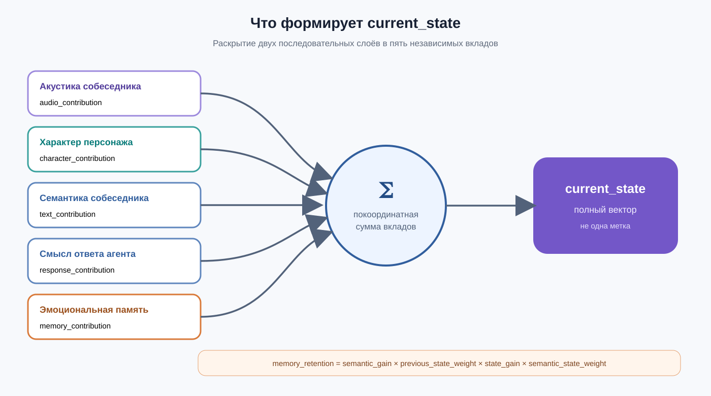
current_stateСхема показывает, какие источники входят непосредственно во второй слой, а какие проходят через оба преобразования.
6. Порядок вычислений
response_emotions. В однопроходном режиме ответ сначала формируется, затем его смысл обновляет состояние для следующего шага. Он не может изменить уже созданный ответ. Влияние нового состояния на ту же реплику требует отдельной двухпроходной генерации.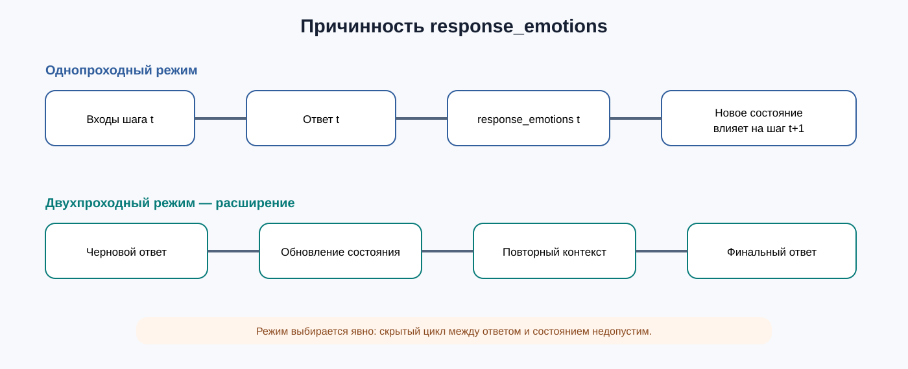
Режим выбирается явно, чтобы избежать скрытого цикла «ответ зависит от состояния, состояние зависит от ответа».
Распознать text_emotions. Для аудио получить proto_emotions, проверить PROTO_EMOTION_SPACE и выполнить проекцию через proto_to_emotion_weights, получив audio_emotions.
Получить ответ агента и определить response_emotions.
Объединить text_emotions, response_emotions и previous_state.
Объединить audio_emotions, character_baseline и semantic_state.
Записать current_state как вход следующего шага.
Другие подсистемы могут читать состояние через отдельный интерфейс; их реализация здесь не рассматривается.
current_state. Конкретные способы преобразования состояния в текст, голос, мимику или действие являются самостоятельными слоями.7. Контракт базовой функции
EMOTION_SPACEЕдиный упорядоченный набор из N эмоциональных координат.external_emotionsПолный N-мерный внешний вектор слоя; отсутствие модальности задаётся маской или нулевым вектором.modulated_emotionsВектор, вклад которого получает покоординатную вариативность: response_emotions в первом слое или character_baseline во втором.previous_emotionsprevious_state для первого слоя или semantic_state для второго.rngГенератор случайных множителей; при тестировании его начальное состояние фиксируется.constrainФункция, определяющая допустимую область итоговых активаций.Перед вычислением должен выполняться инвариант:
text_emotions) = coordinates(audio_emotions) = coordinates(response_emotions) = coordinates(character_baseline) = coordinates(previous_state) = EMOTION_SPACEЕсли один из анализаторов возвращает другой набор классов, отдельный адаптер должен заранее преобразовать его результат в EMOTION_SPACE. Операция смешения не должна угадывать отсутствующие соответствия.
Вход и выход одного обновления
| Часть контракта | Содержимое |
|---|---|
| Входные данные | Пять векторов одинаковой размерности: text_emotions, audio_emotions, response_emotions, character_baseline, previous_state. |
| Параметры | Два независимых набора весов — для семантического и итогового слоёв. |
| Служебные данные | Номер или время шага, маски доступности каналов и источник случайности. |
| Результат | current_state в пространстве EMOTION_SPACE после применения выбранного constrain. |
| Сохраняемые данные | Состояние, идентификаторы агента и диалога, шаг, время, версия параметров и состояние генератора случайности. |
8. Алгоритм одного обновления
- Привести смысловые и внутренние векторы к
EMOTION_SPACE. Для аудио сначала проверитьproto_emotionsвPROTO_EMOTION_SPACE, затем вычислитьaudio_emotionsчерезproto_to_emotion_weights. - Для каждой эмоции независимо сформировать
response_random_factorи вычислитьsemantic_state. - Для каждой эмоции независимо сформировать
character_random_factorи вычислитьcurrent_state. - Применить
constrain, чтобы привести значения к выбранной допустимой области. - Сохранить ограниченный
current_stateкакprevious_stateследующего шага.
audio_contribution; характер, семантическое состояние и память продолжают участвовать в расчёте.Ядро и расширения
Единое пространство эмоций, два последовательных слоя, характер, предыдущее состояние и независимая покоординатная вариативность.
constrain, маски доступности, затухание по физическому времени, параметры отдельных эмоций, воспроизводимая случайность и долговременное хранение.
Ядро определяет рекуррентную динамику. Расширения не меняют её смысл, но делают реализацию устойчивой к пропущенным данным, длительным паузам и эксплуатационным ограничениям.
9. Устойчивость, затухание и стационарная область
Если временно убрать внешние входы и базовые добавки, доля прошлого состояния, переживающая полный проход через оба слоя, равна:
memory_retention = semantic_gain × previous_state_weight × state_gain × semantic_state_weightВ скалярном случае память затухает, если:
memory_retention| < 1Если веса задаются отдельно для каждой эмоции, условие проверяется покоординатно:
memory_retentioni| < 1 для каждой эмоции iПри memory_retention = 0.8 след уменьшается медленно: 1 → 0,8 → 0,64 → 0,51. При значении 0,3 он почти исчезает за несколько шагов. При абсолютном значении не меньше 1 рекуррентная часть не затухает и может усиливаться.
constant_input. Тогда обновление читается как current_state = constant_input + memory_retention * previous_state.stable_state = constant_input / (1 − memory_retention)Формула стационарного состояния применяется покоординатно при постоянных входах и параметрах. При случайной вариативности она описывает ожидаемое среднее, а при активном нелинейном constrain стационарная точка может измениться.
Эту стационарную область можно интерпретировать как эмоциональный аттрактор персонажа. Это следствие постоянного воздействия character_baseline и устойчивой рекурсии, а не отдельная сущность.
10. Что означают числа в current_state
Исходная формула не гарантирует, что координаты останутся вероятностями. Они могут превысить 1, а при некоторых параметрах — выйти за допустимый диапазон. Нужно заранее определить семантику состояния.
Хранить неотрицательные независимые значения и нормализовать только для конкретного потребителя.
Применить softmax или нормировку суммы. Координаты начнут конкурировать: усиление одной уменьшит остальные.
Применить sigmoid или clipping в [0,1], сохранив возможность одновременно активировать несколько эмоций.
variability_range также должен иметь допустимый диапазон. При значении от 0 до 1 random_factor остаётся неотрицательным. Если диапазон больше 1, вклад отдельной эмоции может случайно изменить знак.
11. Параметры слоя и параметры отдельных эмоций
В базовой модели один набор параметров применяется ко всему слою. Более выразительное расширение задаёт отдельную настройку для каждой эмоции:
emotion_valuei = layer_gaini × [external_weighti × external_emotionsi + random_factori × modulated_emotionsi + previous_weighti × previous_emotionsi]| Эмоция | external_weight | variability_range | previous_weight | layer_gain | Интерпретация |
|---|---|---|---|---|---|
| Joy | 0,4 | 0,1 | 0,7 | 1,0 | Умеренно воспринимает радость и довольно долго её сохраняет. |
| Anger | 0,8 | 0,2 | 0,4 | 1,0 | Реагирует на агрессию, но сравнительно быстро восстанавливается. |
| Fear | 0,7 | 0,2 | 0,9 | 1,0 | Тревожные сигналы имеют длительное последействие. |
| Sadness | 0,3 | 0,1 | 0,8 | 1,0 | Слабо заражается грустью, но возникшее состояние сохраняется. |
12. Хранение и жизненный цикл
Эмоциональный вектор должен принадлежать конкретной паре «персонаж — диалог» или «персонаж — отношение», а не быть глобальной переменной модели. Минимальная запись состояния:
EmotionalState {
agent_id
conversation_id
vector[N]
updated_at
model_version
step_index
random_seed
}
Состояние должно принадлежать паре «agent_id — conversation_id»: глобальный вектор привёл бы к переносу эмоций между пользователями. Частота сохранения должна совпадать с выбранной гранулярностью шага обновления.
Каноническая инициализация
Если у диалога ещё нет сохранённой истории, начальное состояние рекомендуется приравнять к характеру:
previous_state0 = character_baselineТак персонаж начинает взаимодействие из естественного для него эмоционального фона. Нейтральный вектор, восстановление состояния сессии или загрузка долговременной памяти допустимы как отдельные явно заданные политики.
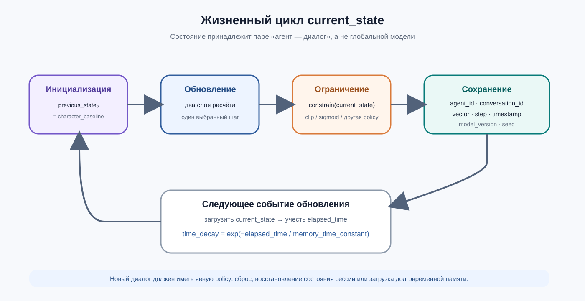
initial_state до следующего событияИнженерное решение: отдельно зафиксируйте инициализацию, гранулярность шага, функцию ограничения, формат хранения и политику восстановления после паузы.
13. Отсутствующие модальности и физическое время
Для каждого необязательного канала нужна маска доступности. Например: audio_contribution = audio_available * audio_weight * audio_emotions, где audio_available равен 0 или 1. При отсутствии аудио обнуляется только этот вклад.
audio_contribution; продолжить использовать character_baseline, semantic_state и память.text_emotions, не подставляя выдуманную эмоцию; использовать доступные входы.initial_state = character_baseline, нейтральный вектор, восстановление сессии или отдельную долговременную память.Простой вариант непрерывного затухания:
time_decay = exp(−elapsed_time / memory_time_constant)memory_time_constant задаёт характерное время сохранения следа. Тогда одинаковое количество шагов не маскирует реальную длительность пауз.
14. Инженерные ограничения модели
- Все эмоциональные векторы должны использовать один
EMOTION_SPACE. - После каждого полного обновления нужна явная функция
constrain; без неё значения могут выйти за допустимый диапазон. - Для каждого отсутствующего входа должна быть задана маска, обнуляющая только соответствующий вклад.
- Состояние нельзя хранить глобально: оно принадлежит конкретным агенту и диалогу.
- Параметры могут задаваться на уровне слоя или отдельно для каждой эмоции; эти варианты нельзя смешивать неявно.
- Для воспроизводимых экспериментов необходимо фиксировать состояние генератора случайных чисел.
Двухслойность является архитектурной гипотезой модели. Её преимущество над одновременным смешением всех источников должно проверяться экспериментально на целевых сценариях.
15. Минимальный набор тестов
Алгебраические свойства
external_weight = 0 соответствующий внешний сигнал не влияет на слой.previous_weight = 0 результат слоя не зависит от previous_emotions.variability_range = 0 повторные вычисления полностью детерминированы.layer_gain = 0 результат слоя равен нулевому вектору.Контракт данных и динамика
[0,720; 0,956; 0,553] с учётом точности округления.PROTO_EMOTION_SPACE × EMOTION_SPACE; одна прото-эмоция может влиять на несколько классов, а нулевой вход даёт нулевой audio_emotions.audio_emotions как окончательную эмоцию собеседника.abs(memory_retention) < 1, а при постоянных входах достигается расчётная стационарная область.16. Итоговая архитектура и границы ответственности
current_inputs + character_baseline + previous_state → двухслойное обновление → constrain → сохранение current_state → следующий шагТехническая глава заканчивается на вычислении, ограничении и сохранении current_state. Другие подсистемы могут читать этот вектор через отдельный интерфейс, но способы его внешнего выражения не являются частью модели формирования состояния.
Модель охватывает формирование, ограничение и хранение эмоционального состояния. Выбор конкретных классификаторов, хранилища и способов использования состояния остаётся за реализацией системы.